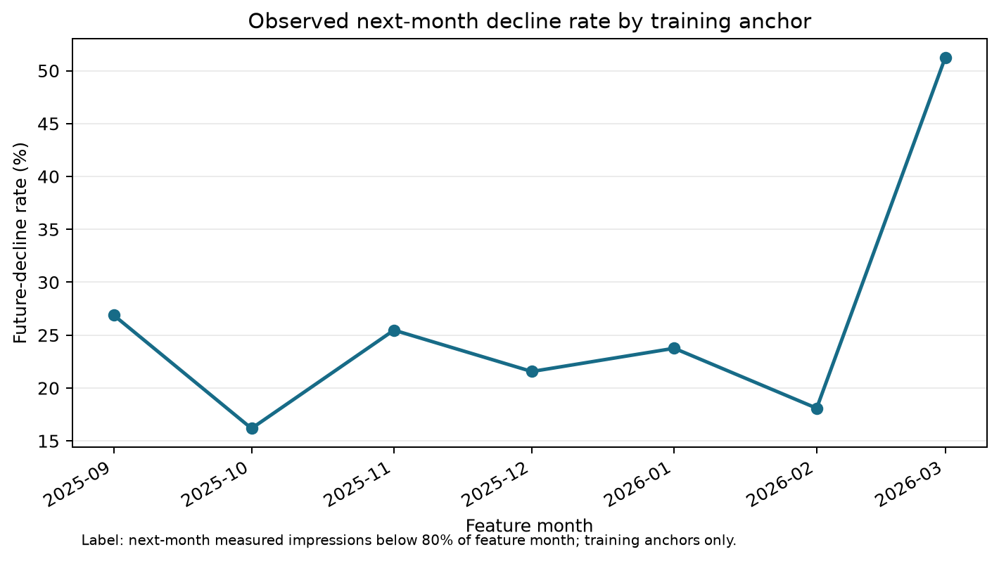
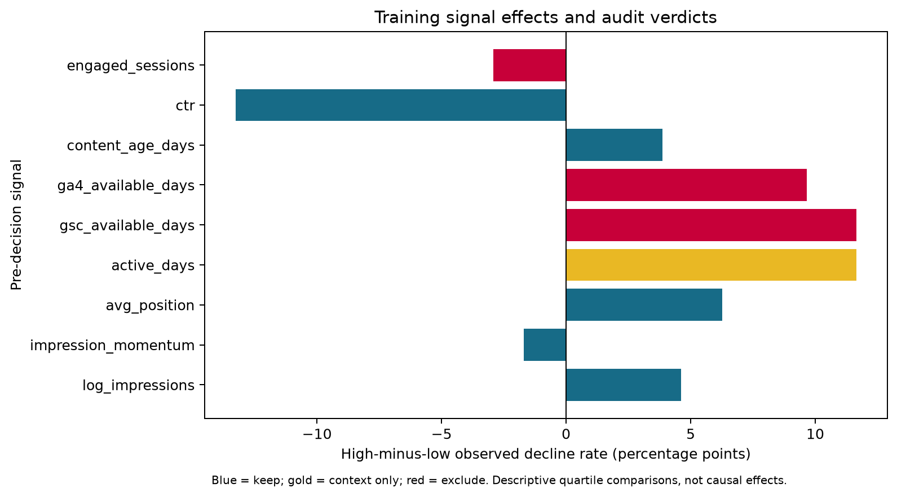
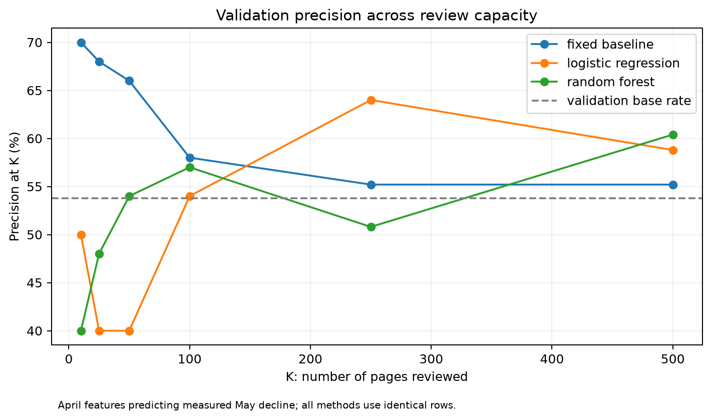
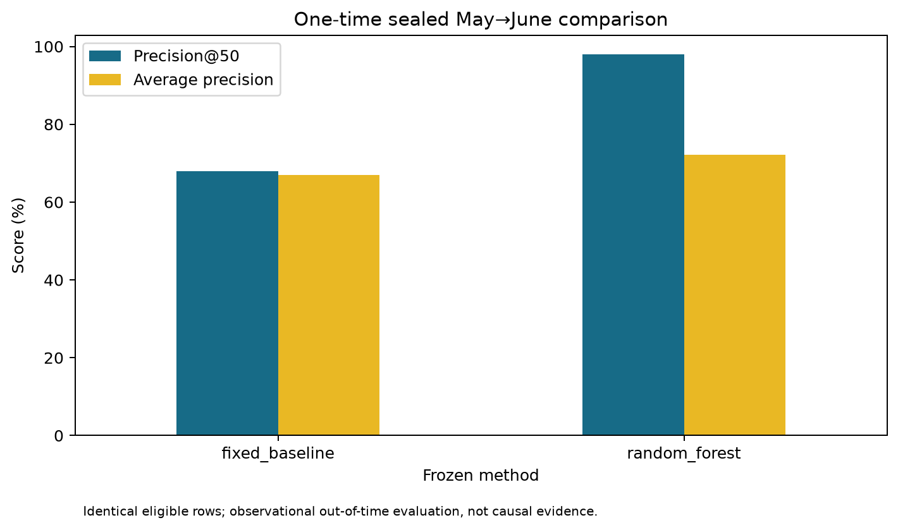
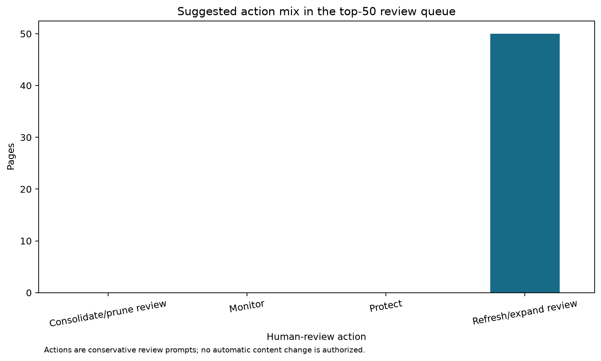

Action supported
Investigate, then decide
An editor checks intent, accuracy, topic coverage, competing content, seasonality, tracking continuity, and business value before recommending any change.
FlyRank ML Internship · Search Intelligence Capstone
A leakage-safe, time-aware system for deciding which already-visible content deserves scarce human review first.
Abstract
This study asks which already-visible content items should receive limited human refresh review before the next month. It aggregates the FlyRank pseudonymized warehouse into leakage-safe page-month examples. A fixed baseline, logistic regression, and random forest are compared with time-aware training, validation, and a one-time sealed test using Precision@50. The transparent baseline wins validation at 66% versus 54% for the strongest learned comparison, but the random forest reverses the order on the sealed month at 98% versus 68%, revealing temporal instability rather than a universally superior method. The output is a ranked 50-item human-review queue with reasons, confidence tiers, no-go rules, and monitoring triggers.
Introduction / Problem statement
The decision is which content items deserve scarce editorial investigation first. One unit is one pseudonymized content item at one monthly decision anchor. The output is a ranked review-priority score with a suggested action, reasons, and confidence tier.
Action supported
An editor checks intent, accuracy, topic coverage, competing content, seasonality, tracking continuity, and business value before recommending any change.
Cost of a wrong call
A false positive wastes review capacity and can prompt disruption; a false negative misses a measured decline opportunity.
Data helps because exposure, momentum, position, age, CTR, and measurement completeness interact and vary through time. A single threshold does not describe those observed patterns consistently.
Data
The study uses warehouse release flyrank_pseudonymized_warehouse_release_v20260703: 104 pseudonymized clients, 519,606 structured content records, and 78,835,655 daily performance rows from 27 January 2025 through 30 June 2026.
Time windows
Training anchors: September 2025–March 2026. Validation: April predicting May. One-time sealed test: May predicting June.
Eligibility
At least 100 current impressions and 20 measured GSC days in both feature and outcome months. Missing analytics remains missing.

Methodology
The target is one when next-month measured impressions are below 80% of feature-month impressions, provided both months meet the coverage rule. The primary metric is Precision@50 because review capacity is limited.
Transparent baseline
40% log exposure, 30% negative prior momentum, 20% established-content age, and 10% valid position opportunity. Weights were frozen before model training.
Learned candidates
Standardized logistic regression and a 300-tree random forest with seed 42 and minimum leaf size 20.
Features include impressions, clicks, CTR, prior impressions/clicks, momentum, valid average position, content age, content type, and search volume. Numeric preprocessing is fit on training data; content type is one-hot encoded. Client/content identifiers and all outcome fields are excluded.

Results
| Split and method | Rows | Base rate | Precision@50 | Avg. precision | Lift@50 |
|---|---|---|---|---|---|
| Validation · fixed baseline | 93,474 | 53.79% | 66% | 53.34% | 1.23× |
| Validation · random forest | 93,474 | 53.79% | 54% | 60.42% | 1.00× |
| Sealed · fixed baseline | 93,048 | 64.04% | 68% | 67.02% | 1.06× |
| Sealed · random forest | 93,048 | 64.04% | 98% | 72.22% | 1.53× |
Logistic regression reached 40% validation Precision@50. The fixed baseline therefore remained the validation-selected operational method. The random forest’s sealed reversal is reported without changing the selection rule.


Limitations & honest framing
The result is measured, directional, and suitable only for prioritizing human review.
Ranked recommendations
The May anchor produced 93,048 eligible items. The top 50 all map to refresh/expand review because every highest-ranked row has measured negative prior momentum; 34 also have meaningful exposure. Confidence is high for 20 and medium for 30.

Monitoring triggers: re-audit after a base-rate or key-missingness shift over 10 percentage points, Precision@50 below the contemporaneous base rate, or a warehouse schema/release change.
Reproducibility
Seed 42, tested reusable code, executed notebooks, public-safe figures, and JSON metric receipts are committed. Local Parquet and CSV caches are ignored. The sealed-frame construction and one-time evaluation receipt are inspectable.